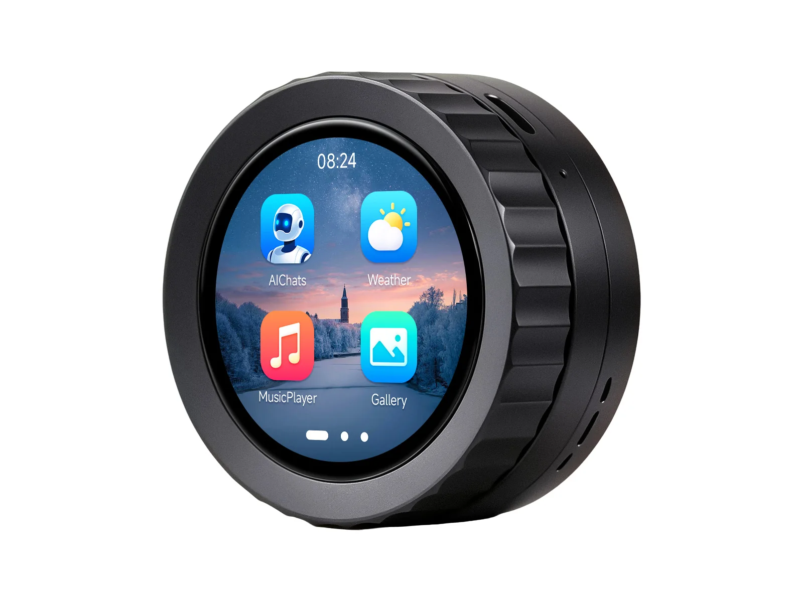

ESP32-P4-Knob-Touch-AMOLED-1.75B
Waveshare · Waveshare ESP32-P4 1.75" 466×466 AMOLED knob in CNC metal case
ESP32-P4-Knob-Touch-AMOLED-1.75B is an 1.75" 466x466 AMOLED Capacitive touch ESP32 display board by Waveshare based on the ESP32-P4 with 32MB flash, 32MB (in package) PSRAM.
Features, ports & interfaces
- MIPI-DSI display
- Capacitive touch (CST9217)
- 32 MB PSRAM (in package)
- 32 MB flash
- microSD (TF) card slot
- Wi-Fi 4 (802.11 b/g/n, 2.4 GHz) via ESP32 co-processor – version from the ESP32 datasheet
- Bluetooth 4.2 BR/EDR (Classic) + BLE via ESP32 co-processor – version from the ESP32 datasheet
- Microphone
- 3.5 mm audio jack
- RTC chip
- IMU: 6-axis sensor
- Rotary encoder: Dual rotary switches (knob)
- Vibration motor
- Metal enclosure
Specifications
| Parameter | Value | Source |
|---|---|---|
| Screen size | 1.75" | source |
| Resolution | 466x466 | source |
| Panel | AMOLED | source |
| Shape | Round | source |
| Display interface | MIPI-DSI | source |
| Display driver | CO5300 | source |
| Touch | Capacitive | source |
| Touch controller | CST9217 | source |
| MCU / SoC | ESP32-P4NRW32X | source |
| MCU family | ESP32-P4 | source |
| Co-processor | ESP32 (classic) co-processor | source |
| Flash | 32MB | source |
| PSRAM | 32MB (in package) | source |
| Wi-Fi | 2.4 GHz Wi-Fi (ESP32 co-processor) | source |
| Bluetooth | Classic Bluetooth + BLE 4.2 (ESP32 co-processor) | source |
| Category | Waveshare ESP32 touch LCD | |
| Audio | Audio decoder chip | source |
| Brightness | 700 cd/m² | source |
| Rotary encoder | Dual rotary switches (knob) | source |
| IMU | 6-axis sensor | source |
| Audio jack | 3.5 mm audio jack | source |
| Microphone | Microphone | source |
| RTC | RTC chip | source |
| SD / TF | TF card slot (1 GB card included) | source |
| Case / shell | Yes – CNC metal case | source |
| Vendor | Waveshare | |
| Vibration | Vibration motor | source |
Official links & documentation
Notes
- The shop page sells this board as ESP32-P4-Knob-Touch-AMOLED-1.75B; the co-processor is a classic ESP32 (Wi-Fi 4, BT Classic + BLE 4.2), not an ESP32-C6.